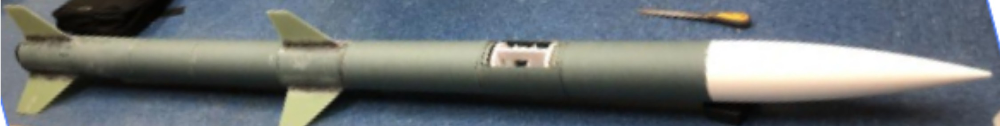
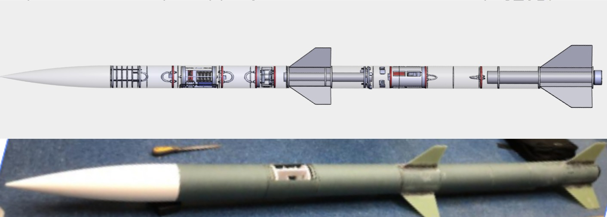
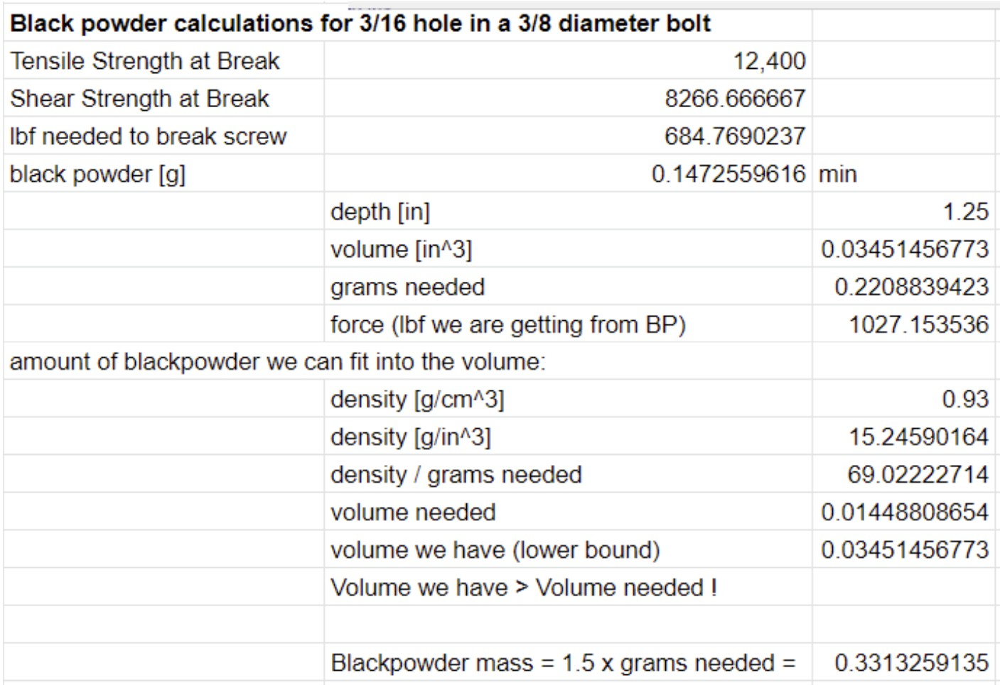

STAR’s Stage Separation rocket (SSEP) is a proof of concept project testing a two stage airframe design and a spring-actuated separation mechanism that is released upon the detonation of explosive bolts (pyro bolts). Stage separation technology makes rockets more efficient by ejecting dead weight.

The mechanism holding the two stages together consist of two aluminum rings, each of which are epoxied into their respective stages. "Pyro bolts" and two igniters slot through the lower stage ring and screw into threads in the upper ring. Pyro bolts were ⅜” nylon bolts with a hole lathed through their center axis that is filled with black powder and a pyrotechnic e-match, and then sealed with JB-Weld’s 15-minute Plastic Bonding epoxy. These bolts hold the rings and thus hold the stages together while compressing three springs to exactly 0.5 inches, mediated by 0.5 inch standoffs. Upon a signal from Altus Metrum Easymega altimeters, the bolts detonate, allowing the springs to separate the stages.

Prior to any testing of the pyro bolts, calculations were done to determine the amount of black powder required to break the bolts. These used the tensile strength and the shear strength of the lathed bolts to determine that 0.33g of black powder was necessary to break each bolt:

Our testing began as single bolt tests to determine and validate the type of epoxy, diameter size, and amount of black powder used. We eneded up selecting a bolt design with a 3/16’’ diameter hole 1.25 inches deep, which allowed us to put our igniters side by side in the bottom of the bolt. Though we initially found scoring, which reduces the tensile strength of the bolt, to be unnecessary, we still scored the outside of the bolts at their center point to weaken the structure, encouraging a failure in the more desirable location. We then tested the 3 bolts together in a prototype mechanism, with one empty tube containing the upper ring and another containing the lower ring. There were no documented failures across several full separation tests.
Mechanism design • CAD (Solidworks) • Structural and failure analysis • Experimental testing
Email: jennifersili@berkeley.edu
LinkedIn: linkedin.com/in/jennifersili